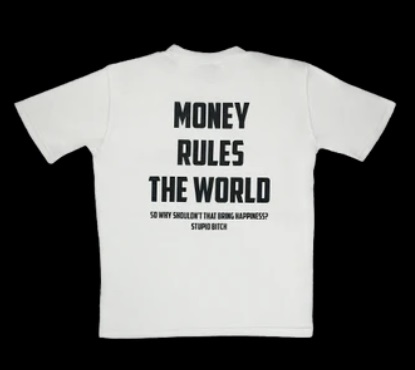
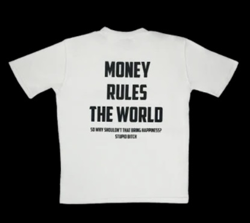

Les vêtements, la mode, le style notamment streetwear me fascine. Ma
curiosité m'attire particulièrement vers les marques de vêtements
indépendantes, leurs nouveaux design ou leurs nouvelles sorties. Mon
occupation première est de trouver des boutiques et des marques
indépendantes, souvent dans le style streetwear, et de m’intéresser à
leurs design et leurs chemins pour en arriver là ou tout simplement
trouver des vêtements qui me plaise pour me les procurer.
Le système de ces marques est lui aussi attrayant, en effet leurs mise
en vente des produits est particulier car il fonctionne sous forme de
drop, dû au fait qu’ils ont des stocks limités de par leurs notoriété.
Ce système me séduit encore plus que les coutumes traditionnelles car
peu de gens peuvent se procurer les mêmes articles que moi, ce qui rend
certaines pièces plus rare.
Qu’est-ce qu’un drop ? C’est l’ouverture ou la mise en vente éphémère de
produits, articles ou collections car ils sont en édition limitée.
Généralement, ces derniers sont annoncés sur les réseaux sociaux ou par
des publicités et la date d’ouverture varie en fonction des drops, elle
peut être de 10 minutes comme de plusieurs semaines.
Je trouve passionnant le fait de créer une marque dans son intégralité,
inventer, dessiner, réaliser des design avec par exemple photoshop en
cherchant qu’est-ce qu’il n’est pas encore fait sur le marché et qu’est
ce qu’on ne voit toujours pas ou peu, trouver et choisir les bons
fournisseurs, décider d’un emplacement de production et de stockage des
produits, partir à la recherche de financement, définir l’identité de la
marque, son nom, son logo, créer une boutique en ligne et enfin mettre
en place une stratégie de communication et de publicité.


 
